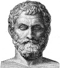

MÖ 585 yılında Yunan şehri Milet’le (Miletos) yaşayan bir filozof bir iddia ortaya attı. Buna göre o yılın 28 Mayısı’nda tam güneş tutulması yaşanacaktı.

Astronomik gözlemlere dayanılarak yapılan böylesi tahminler antik dünya için duyulmamış bir şeydi. Yunan dünyasındaki pek az insan tutulmalar gibi göksel olayların önceden tahmin edilebileceğine inanıyordu. İnsanların çoğu kendilerini her şeye kadir tanrıların kollarına bırakmıştı. Tüm bunlara rağmen Miletli bilgin Thales (MÖ 620-546) insan bilgisinin doğa olaylarının anlaşılmasını mümkün kılabileceği yönündeki iddiasında ısrarcı oldu.
Tam da Thales’in söylediği tarihte, bugün Türkiye sınırları içerisinde kalan bir bölge karanlığa gömüldü. Tutulma Miletlileri korkutmuş, Thales’i ise haklı çıkarmıştı. Bu olay Batı bilim tarihinin miladı olarak kabul edildi.
Thales’ten önce, pek çok Yunanlı için din ve doğa birbirinden ayrı düşünülemezdi. İnsanlar deprem ve tutulma gibi olayların, kızgın tanrılar insanlığa bir mesaj gönderdiğinde yaşandığına inanıyordu. Yunan mitolojisi doğrudan doğruya doğa olaylarına müdahale eden tanrılarla ilgili hikayelerle doluydu.
Bir tutulma olayını önceden tahmin eden Thales, Yunanlıların doğayı ve dünyayı anlama ve bilgiye değer verme şeklini değiştirmiş oldu. Felsefe kelimesini de bir kavram olarak ilk o kullandı. Yunanca bilgi aşkı anlamına gelen felsefe, Thales’e göre olayların ardındaki nedenleri araştırarak dünyayı anlamaya çalışanlar tarafından yapılan düşünsel eylemdi.
Thales bir tüccar ve zeytinyağı üreticisiydi. Sık sık Yakın Doğu’ya ve Milet’le ticari ilişkileri bulunan Mısır’a gidiyordu. Büyük ihtimalle Babil’e de gitmiş ve burada tutulmayı önceden tahmin etmesini mümkün kılan Babil Astronomisi’ni öğrenmişti.
Milet’e döndüğü zaman Thales bir felsefe okulu kurdu. Bu okul aralarında Anaximander (MÖ 610-546) ve Anaximenes’in de (MÖ 585-525) bulunduğu pek çok önemli düşünürü yetiştirecekti. Bilimsel ve felsefi çalışmalarına ek olarak Thales krallara askeri danışmanlık da yapmıştır. Komşusu Lidya Persler’e yenildikten sonra Milet’in bağımsızlığını koruyabilmiş olmasında Thales’in önerileri büyük rol oynamıştı.
Hemen hemen 60 yaşlarındayken beklenmedik bir şekilde öldü. Söylendiğine göre bir jimnastik gösterisini izlerken bir anda hayatını kaybetmiştir.
Ek Bilgiler
1- Thales dünyanın sudan yapıldığını ve maddenin tüm biçimlerinin sudan kaynaklandığına inanıyordu.
2- Antik Miletos kazı alanı günümüzde Türkiye sınırları içerisinde yer almakta ve Milet adıyla anılmaktadır.
3- Bir rivayete göre Thales Mısır’a geometri öğrenmek için gider. Gölgelerinin uzunluğundan yola çıkarak piramitlerin yüksekliğini doğru hesaplaması ev sahiplerinin hayranlığını kazanmasını sağlayacaktır.